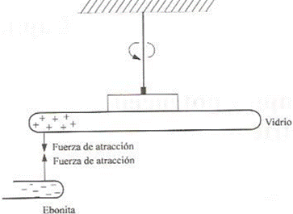
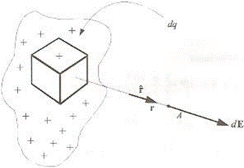
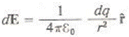
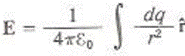
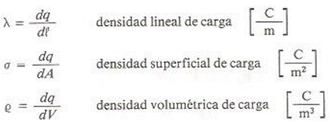
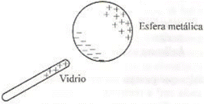

![IM]()
ELECTRICIDAD Y MAGNETISMO (1414)
Objetivo(s) del curso:
El alumno analizará los conceptos, principios y leyes fundamentales del electromagnetismo. Desarrollará su capacidad de observación y manejo de instrumentos experimentales a través del aprendizaje cooperativo.
1. Campo y potencial eléctricos.
1.1 Concepto de carga eléctrica y distribuciones continuas de carga (lineal y superficial).
Electro - Magnetismo
El Electro - Magnetismo tiene sus orígenes desde una época tan remota como el 600 A.C., Donde los griegos de la antigüedad, (en especial Tales de Mileto) descubrieron que cuando frotaban ámbar contra lana o piel, el primero atraía otros objetos. En la actualidad, decimos que con ese frotamiento el ámbar adquiere una carga eléctrica neta o que se carga. La palabra “eléctrico” se deriva del vocablo griego elektron, que significa ámbar. Una persona se carga eléctricamente al frotar sus zapatos sobre una alfombra de nailon; y puede cargar un peine si lo pasa por su cabello seco.
Los fenómenos observados por los griegos quedan contenidos en la parte del electromagnetismo que estudia los cuerpos cargados en reposo, conocida como electrostática.
Algunas de las partículas que forman los átomos posee la propiedad fundamental de la masa, pero adicionalmente o poseen otra propiedad llamada carga eléctrica. La carga de dichas particular puede ser de 2 tipos: Una particular subatómica puede poseerle la carga que caracteriza el protón o la típica del electrón. Además existen partículas que poseen ambos tipos de carga simultáneamente (neutrón), En este caso decimos que la partícula no posee exceso de cada.
Tomemos una barra de vidrio y frotémosla con un pedazo de seda; observaremos que después de frotada es capaz de atraer pequeños pedazos de papel o cualquier otro material ligero.
Si, por otro lado, frotamos una barra de ebonita (Hule duro) con piel, observaremos que también adquiere la capacidad de atraer pequeños pedazos de materiales ligeros.
Con un dispositivo semejante al de la imagen, podremos notar que las dos barras, previamente frotadas con sus respectivos excitadores, se atraen entre sí.

Al analizar el experimento que nos permite darnos cuenta de la existencia de los dos tipos de carga mencionados y de algunas características del fenómeno de atracción y repulsión entre cuerpos con excesos de carga.
Repitiendo el experimento anterior, ahora con dos barras del mismo material frotadas con el mismo excitador, observaremos que se rechazan.
Con base en el experimento descrito, repetido con diversos materiales concluimos que existe dos tipos de cargas eléctrica.
A los materiales que adquieren un exceso de cargas del mismo tipo como el vidrio frotado con seda les llamaremos materes con exceso de cargas positivas o simplemente Positivas (Con defecto de electrones), y de manera semejante a los que adquiere un exceso de carga del mismo tipo que de la ebonita frotada con la piel la llamaremos materiales con exceso de carga negativa o simplemente Negativos (con exceso de electrones).
La convención mencionada fue originalmente propuesta por Benjamín Franklin, la cual del experimento mencionado se desprende que:
a) Cargas del mismo tipo se rechazan.
b) Cargas de diferente tipo se atraen.
DISTRIBUCIONES CONTINUAS DE CARGA
En general el exceso de carga en los cuerpos puede presentarse distribuido en un volumen, una superficie o una línea.
Como lo muestra la siguiente figura, es el caso de una región con densidad volumétrica de carga.

Para encontrar el campo total de un punto cualquiera A, se toma la contribución de cada elemento de carga dp, el cual se puede considerar como carga puntual y se integra en toda la región, Es decir, si:

Entonces:

Debemos tener presente que se trata de una integral vectorial; es decir, se debe descomponer en las integrales de las componentes, Tomaremos la convención de la notación siguiente:

CONDUCTORES Y DIELECTRICOS
Para poder comprender los primeros fenómenos observados es necesario que distingamos entre materiales conductores y materiales aislantes o dieléctricos. Por el momento esta distinción no será rigurosa, ya que aún no tenemos los elementos suficientes que nos permiten comprender adecuadamente la estructura y características de ambos tipos de materiales.
Un material conductor es cualquier sustancia que posee gran cantidad de portadores de carga libres por unidad de volumen; con ayuda de estos es posible transporta carga fácilmente de un lugar a otro a través de ellos ( = 1017 o más portadores por cm3).
EJEMPLOS:
· Metales
· Gas Ionizado
· Electrolitos
Llamaremos aislante o dieléctricos a cualquier sustancia que ni posee portadores de carga libres, o bien , que poseen un número muy reducido por unidad de volumen (=105 o menos portadores por cm3).
EJEMPLOS:
· Plástico
· Aceite
· Helio No Ionizado
Existen materiales que poseen un número de portadores de carga libre del orden de 1011 en cada cm3 a temperatura ambiente de 300k, que se conoce como semiconductores. Estos materiales no se mencionará en el desarrollo de este tema.
INDUCCIÓN DE CARGAS
Cuando un material cualquiera es colocado en la vecindad de un cuerpo cargado, se detecta en la aparición de una distribución superficial de carga; este fenómeno se conoce como inducción de carga.
Si el material es un conductor metálico, la presencia de la carga inducida se debe al movimiento de los errores libres que son atraídos o rechazados dejando exceso de carga positiva al desplazarse y aumentado la negatividad donde se acumula.

En los dieléctricos la aparición de carga inducidas se debe a la orientación molécula o electrón.
Es conveniente enfatizar que el fenómeno de inducción de carga no altera el balance de cargas positivas y negativas de los cuerpos, ya que si aparece carga de un tipo en una zona del material, la misma cantidad de carga de distintos tipos aparecerá en otra.
Introduciremos los conceptos de campo y potencial eléctrico desarrollado los modelos matemáticos que describen este fenómeno electrostático.
1.2 Ley de Coulomb. Fuerza eléctrica en forma vectorial. Principio de superposición.
1.3 Campo eléctrico como campo vectorial. Esquemas de campo eléctrico.
1.4 Obtención de campos eléctricos en forma vectorial originados por distribuciones discretas y continuas de carga (carga puntual, línea infinita y superficie infinita).
1.5 Concepto y definición de flujo eléctrico.
1.6 Ley de Gauss en forma integral y sus aplicaciones.
1.7 El campo electrostático y el concepto de campo conservativo.
1.8 Energía potencial eléctrica. Diferencia de potencial y potencial eléctricos.
1.9 Cálculo de diferencias de potencial (carga puntual, línea infinita, superficie infinita y placas planas y paralelas).
1.10Gradiente de potencial eléctrico.
2. Capacitancia y dieléctricos.
2.1 Concepto de capacitor y definición de capacitancia.
2.2 Cálculo de la capacitancia de un capacitor de placas planas y paralelas con aire como dieléctrico.
2.3 Cálculo de la energía almacenada en un capacitor.
2.4 Conexiones de capacitores en serie y en paralelo; capacitor equivalente.
2.5 Polarización de la materia.
2.6 Susceptibilidad, permitividad, permitividad relativa y campo eléctrico de ruptura.
2.7 Vectores eléctricos. Capacitor de placas planas y paralelas con dieléctricos.
3. Introducción a los circuitos eléctricos.
3.1 Conceptos y definiciones de: corriente eléctrica, velocidad media de los portadores de carga libres y densidad de corriente eléctrica.
3.2 Ley de Ohm, conductividad y resistividad.
3.3 Potencia eléctrica. Ley de Joule.
3.4 Conexiones de resistores en serie y en paralelo, resistor equivalente.
3.5 Concepto y definición de fuerza electromotriz. Fuentes de fuerza electromotriz: ideales y reales.
3.6 Nomenclatura básica empleada en circuitos eléctricos.
3.7 Leyes de Kirchhoff y su aplicación en circuitos resistivos con fuentes de voltaje continuo.
3.8 Introducción a los circuitos RC en serie con voltaje continuo.
4. Magnetostática.
4.1 Descripción de los imanes y experimento de Oersted
4.2 Fuerza magnética, como vector, sobre cargas en movimiento.
4.3 Definición de campo magnético (B).
4.4 Obtención de la expresión de Lorentz para determinar la fuerza electromagnética, como vector.
4.5 Ley de Biot-Savart y sus aplicaciones. Cálculo del campo magnético de un segmento de conductor recto, espira en forma de circunferencia, espira cuadrada, bobina y solenoide.
4.6 Ley de Ampere.
4.7 Concepto y definición de flujo magnético. Flujo magnético debido a un conductor recto y largo, a un solenoide largo y a un toroide.
4.8 Ley de Gauss en forma integral para el magnetismo.
4.9 Fuerza magnética entre conductores, momento dipolar magnético.
4.10Principio de operación del motor de corriente directa.
5. Inducción electromagnética.
5.1 Ley de Faraday y principio de Lenz.
5.2 Fuerza electromotriz de movimiento.
5.3 Transformador con núcleo de aire.
5.4 Principio de operación del generador eléctrico.
5.5 Conceptos de inductor, inductancia propia e inductancia mutua.
5.6 Cálculo de inductancias. Inductancia propia: de un solenoide, de un toroide. Inductancia mutua entre dos solenoides coaxiales.
5.7 Energía almacenada en un campo magnético.
5.8 Conexión de inductores en serie y en paralelo; inductor equivalente.
5.9 Introducción a los circuitos RL y RLC en serie con voltaje continuo.
6. Fundamentos de las propiedades magnéticas de la materia.
6.1 Diamagnetismo, paramagnetismo y ferromagnetismo.
6.2 Definición de los vectores intensidad de campo magnético (H) y magnetización (M).
6.3 Susceptibilidad, permeabilidad del medio y del vacío, permeabilidad relativa.
6.4 Comportamiento de los materiales ferromagnéticos. Curva de magnetización y ciclo de histéresis.
6.5 Circuitos magnéticos. Fuerza magnetomotriz y reluctancia en serie.
6.6 El transformador con núcleo ferromagnético.
7. Bibliografía.
JARAMILLO MORALES, Gabriel Alejandro, ALVARADO CASTELLANOS, Alfonso Alejandro - Electricidad y magnetismo.
YOUNG,HUGH D.,FREEDMAN,ROGER A. - Sears y Zemansky Física universitaria con física moderna.